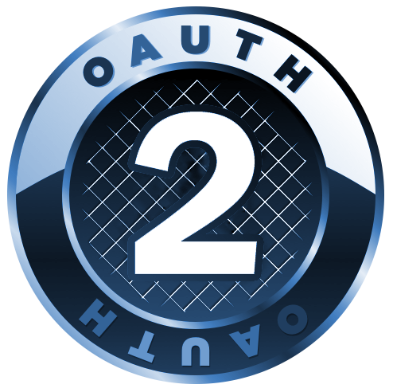

Project 1 - Traffic Ease Signal Timer
The TEST serves as an effective measure for relieving urban traffic congestion. The system is capable of adjusting the signal timing parameters in real time according to the seasonal changes and short-term fluctuation of traffic demand, resulting in an improvement in the efficiency of traffic operation on urban road networks. The development of information technologies on computing science, autonomous driving, vehicle-to-vehicle, and mobile Internet has created a sufficient abundance of acquisition means for traffic data. Great improvements in data acquisition include the increase in the available amount of holographic data, available data types, and accuracy.
Project 2 - Rest Web Services with OAuth2

As an Intern at Softvan I developed a Rest Rest-based blog service with an O Auth2 authentication system. I developed company OAuth2 Based authentication rather than relying on third-party access providers such as Facebook or Google. The project was built using Python, Flask, HTML, CSS, JavaScript, and MySQL.
Project 3 - Softvan Automate

There were a need for developing automation for developing, testing, and deploying web application on-premise for the client company. It also included log management, server configuration, and scripting. I joined the project initially with 2 other developers. As a team member, I developed an Ansible script to configure the server with docker installation, a Jenkins pipeline to build a docker container and deploy that docker on the server, and an ELK log management system for collecting logs from the server, Jenkins pipeline, Web App development, etc.